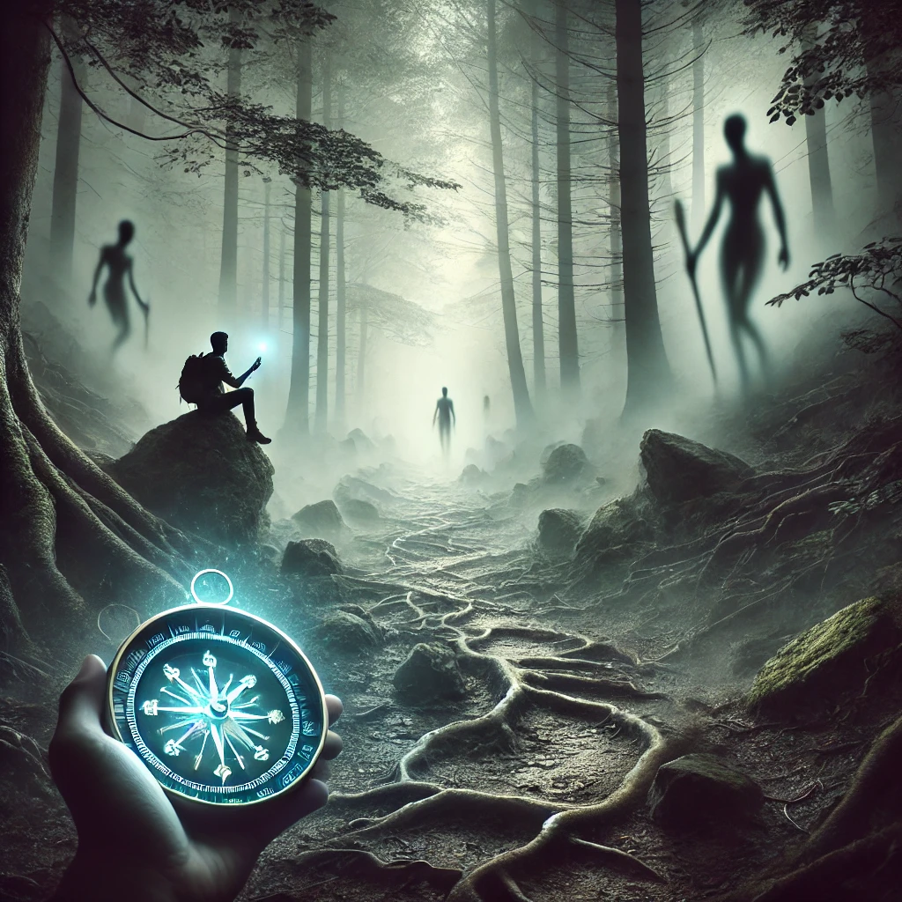

The trail ahead is shrouded in mist, its surface uneven and broken by roots and stones. The compass in your hand vibrates erratically, as though warning of challenges yet unseen. You feel a heaviness in the air, a quiet resistance that seems to emanate from the path itself.
As you pause to gather your thoughts, the mist begins to shift, forming vague shapes and outlines. Each figure seems to represent an obstacle—fear, doubt, and hesitation—each one tied to something within you. The voice of the unseen speaks again, steady but insistent:
“To know the path is to know its obstacles. What you face ahead reflects what you hold inside. Will you confront these challenges, or find another way?”
The path ahead begins to clear slightly, revealing three distinct obstacles. Each one feels familiar, yet daunting in its own way.

Which obstacle will you confront first?